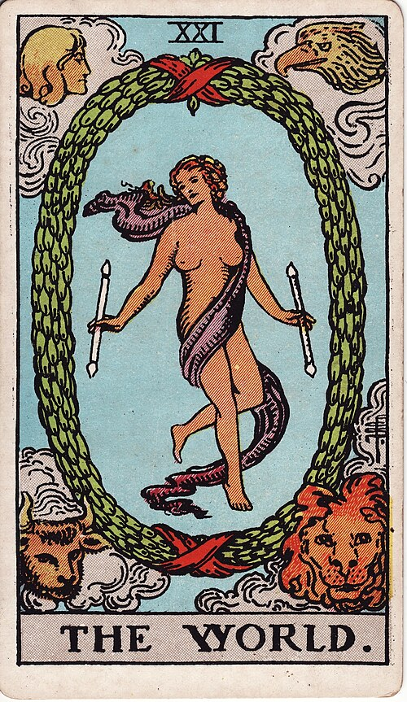

| Arcana | Major · XXI |
| Suit | — |
| Element | Earth |
| Attribution | Saturn |
The World
In shortSomething has genuinely finished. Take the credit.
Upright
A cycle finishes and the pieces come together. This is arrival — the project delivered, the lesson actually learned all the way through, a chapter that closed properly instead of trailing off. It carries a note of travel and of a wider world opening up, because finishing here is less an ending than a graduation into something larger. Give yourself the credit.
Reversed
You are nearly there. This is the last ten percent that never gets done: the qualification not claimed, the trip not booked, the relationship that has arrived without either of you saying so. It can also mean an anticlimax — reaching the goal and finding it oddly flat, which usually means the goal was inherited rather than chosen.
The turn
Finish it formally. Mark the ending in some visible way so the next thing can begin.
Reading with your own deck?
Sage records the cards you actually pull, writes the reading, keeps every one, and shows you what keeps returning across them. Free, private, no account.